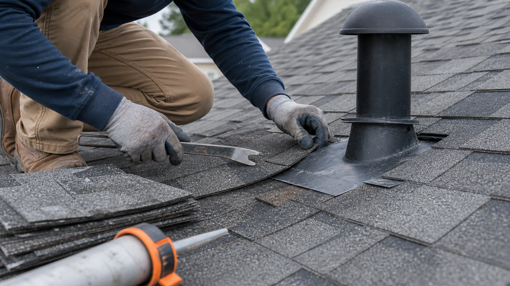

Leak tracing
Ceiling stains, attic moisture, chimney leaks, skylight leaks, valleys, vents, and roof-to-wall transitions.
Find local providers for leaks, missing shingles, flashing failures, vent problems, and small storm damage before water spreads into the home.
A roof leak rarely travels straight down. Water can enter around a vent, chimney, wall transition, valley, or lifted shingle and show up several feet away indoors. A good repair provider traces the likely path before recommending work.
RoofLink is not the contractor. The platform helps you describe the symptom, urgency, roof type, and visible damage so independent local providers can decide whether the request fits their repair work.

These examples help you describe the request clearly before independent providers follow up.
Ceiling stains, attic moisture, chimney leaks, skylight leaks, valleys, vents, and roof-to-wall transitions.
Missing, cracked, lifted, wind-creased, or mismatched shingles that affect a limited area.
Pipe boots, vent collars, exposed fasteners, drip edge, step flashing, counter flashing, and ridge caps.
RoofLink helps organize the details. You still choose who to speak with, what to verify, and whether to hire.
Tell the provider where the leak appears, whether it happens during wind-driven rain, and what room or attic area is affected.
Mention missing shingles, loose flashing, damaged vents, cracked sealant, overflowing gutters, or recent storm activity.
Ask each provider what failed, what materials will be replaced, and what nearby details will be checked.
If the roof is brittle or failing broadly, compare whether repair is sensible or only a short-term patch.

Provider replies are useful when they help you understand scope, timing, risks, and next steps. Use the first conversation to ask direct questions before approving work.
Cause, not cosmetic fixLook for an explanation of the water entry path, not only a plan to apply caulk over the visible spot.
Materials and matchAsk how replacement shingles, flashing, sealants, and fasteners will be selected for your roof.
Follow-up photosRequest before and after photos so you understand what changed on the roof.
Some roof problems are not emergencies, but these signs usually deserve faster provider follow-up.
Water entering during rain can damage insulation, drywall, decking, and electrical areas.
Lifted tabs and creases can keep worsening during the next storm.
Multiple leaks in different areas may point to broader system age or ventilation issues.